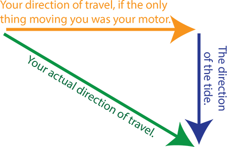

-->
# Nehemiah #### presentes --- ## Made by Fitsum
# Trigonometry --- # usefulness --- #### Al-Biruni's Classic Experiment how do you calculate the radius of the earth in 10th century Biruni solved it we unprecedented accuracy and precision at this time he used *Trigonometry* to calculate the radius of the earth but he found out that --- --- he found that $$Radius = \frac{h\cos{\alpha}}{1-\cos{\alpha}}$$ --- #### navigation if you want to be pilot, in ships, planes its very usefull to know trigonometry ---  --- --- --- #### Do you know you can convert any complex function to sum of sin and cos with different frequency so this means you can represent any function as the sum of *trigonometry* and this is called Fourier transform in filtering in compression --- And this is very useful for music because it helps you filter a noise because it break down the signal into frequency component so we can filter the noise in the audio <a href="https://www.simplifyingtheory.com/math-in-music/">check this out</a> --- #### Architecture in civil engineering it is very useful to analysis how much load can building(bridges) can hold and knowing trigonometry is fundamentally useful for this. Triangles are the strongest shapes --- --- ### Computer Graphics To build games and animations you must first understand how to position staffs and to do this trig is very handy tool also if you what to simulate something in real life it helps a lot e.g pendulum, cars(in curve motion), solar system --- ### Medical imaging Trigonometry is used in medical imaging to create images of the human body. Medical technicians use trigonometry to calculatethe angles and positions of X-ray beams, and to create 3D images of internal organs <a href = "https://www.glassner.com/wp-content/uploads/2014/04/Trig-For-Computer-Graphics.pdf">check this pdf if you are intersted</a> --- but besides this all and more applications it have trigonometry is very beautiful by it self for example the most beautiful mathematical identity is derived from Euler's formula which consists sin and cos also just enjoy this play by sin --- --- ## for the enjoyment